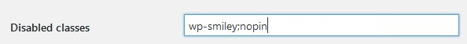
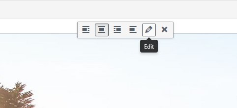
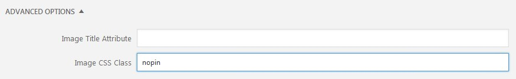
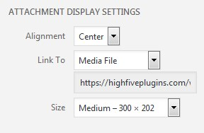

jQuery Pin It Button For Images is a free plugin that allows your readers to easily pin images in your blog posts by simple hovering over them and clicking a button. It is highly customizable, so you can adjust it to your own needs. You can download it on the WordPress plugin repository or find the source on GitHub.
Enabled and disabled classes are an easy way to activate or deactivate the “Pin it” button on certain images. Let’s see how it works.
In this example I’ll use the Disabled classes, but the Enabled classes setting works the same way (except you use it to show the “Pin it” button only on certain images instead of hiding the button on certain images).
Let’s start with the settings panel. Our current Disabled classes setting looks like the following:

Classes are separated by semicolons, so we have two classes currently available: wp-smiley and nopin. Let’s use the latter to disable the button on an image in a blog post. If you want to use another class, feel free to add it (make sure you separate it using a semicolon).
In order to use the class you need to modify the class attribute of the image you want to disable. You can do that using one of two options:
Using WordPress’ image editor


Using text editor
<img class="alignright" src="http://www.example.com/wp-content/image.png" width="500" height="250" /><img class="alignright nopin" src="http://www.example.com/wp-content/image.png" width="500" height="250" />Once you add the class to the image using one of the two described ways, the image shouldn’t show the “Pin it” button anymore.
If need be, you can do the process in reverse — first, find the class attribute of the image you want to delete, then choose one of the classes (if there are many), add it to the Disabled classes setting and save plugin’s settings. That will work too.
If the image you want to disable the button on doesn’t have a class and you can’t add it (e.g. a plugin generates its code), you can (in most cases) disable it using the Image selector setting. Using that setting requires knowledge of jQuery and I couldn’t possibly cover it in a tutorial. If that’s the case, ask your web developer for help or use the support forum.
Minimum image resolution is a set of constraints that allows one to disable smaller images from showing the “Pin it” button. One can set different size constraints for small devices because on smaller devices images will be, inevitably, smaller. When checking the image against the constraints set, the size of the image on screen is taken into account. That means if an image is 1500 pixels high and wide “naturally” but on screen its size is only 200 pixels high and wide, it will be treated as a 200×200 image.
Example
Let’s say you have an image at the bottom of every blog post, like a signature or an ad, and you
would like to disable it. The easiest way to do that would be:
When checked, if you link an image to its full-resolution version, the plugin pins the full-resolution version. Linking an image to its full-resolution version can be done when adding an image. In the Insert Media screen, in the Attachment Display Settings section set the Link to property to Media File. That’s it.

This setting produces HTML code that looks like the following:
<a href="http://www.example.com/wp-content/image_large.jpg"><img class="alignright wp-image-58" src="http://www.example.com/wp-content/image_small.jpg" width="500" height="250" /></a>Transparency value is responsible for the hover effect over the image. Set it to 0 to disable the grey overlay when user hovers over the image.
Every released version of the plugin is available here, in the “Other versions” section. To install it, first make sure you have deactivated and deleted the version you’re using currently. Then download the zip file of the version you would like to use. Now you need to install it using the Plugin Upload feature. You can read about it here in the Install a Plugin using the WordPress Admin Plugin Upload section.
If you have any issues with the plugin, report them on GitHub Issues or in the WordPress support forum. Few things to do when reporting a problem:
If you repeatedly get the message that says “Sorry! Something went wrong on our end. Please try again.” after trying to pin an image, in almost all cases it’s caused by the hosting of your website. It’s usually caused by some server settings that prevent Pinterest from downloading the image. Please email your hosting provider, describe that you’re unable to pin images from your site and ask them if they could fix it.
This requires adding a data-pin-id attribute to the image element containing the original
Pinterest pin ID. See the
GitHub repository
for more details.
If you’re using Cloudflare and have the settings page empty, there’s an easy fix for that. In Cloudflare’s ‘Speed’ settings, please disable Auto Minify for JavaScript and purge the cache. If you’re using any other caching plugin, clear its cache too. Then clear your browser’s cache or switch to incognito mode. Now you should be able to see the settings page correctly. Sometimes you need to give it a few minutes after disabling Auto Minify and accessing the settings page.
You can disable Auto Minify, adjust your settings and then enable Auto Minify again, which should work just fine. Cloudflare refuses to fix this issue and suggests what I suggested.
If you’re up for it, you can keep Auto Minify enabled but disable it on the plugin’s JavaScript file using Page Rules. To do that, in Cloudflare’s Page Rules add a new rule with a URL address like this: http://www.yoururladdress.com/wp-content/plugins/jquery-pin-it-button-for-images/js/jpibfi.admin.js*, add the Disable Performance setting and Save and Deploy the rule. Once you force refresh the plugin’s settings page everything should work properly.
The plugin shows the “Pin it” button when a user hovers over an image. That works perfectly fine for desktop machines. On mobile devices, in most cases a hover event doesn’t fire until the user taps the image, so the button may not appear reliably. If your audience is primarily on mobile, consider always showing the button using the Button display mode setting.
If you’re using Visual Composer to add images (e.g. using the Image Element) and want to add or remove the Pin it button to/from images, the enabled/disabled classes settings won’t work. That’s because Visual Composer won’t add the class directly to the image element, but to its container instead. The easiest way to make it work is to:
.jpibfi_container img:not(.nopin img)That’s usually caused by your theme’s CSS. In most cases adding the following line of CSS fixes the issue:
a.pinit-button { z-index:10000000 !important; }The plugin only supports the img tag. If you have an image that’s being shown using another
tag (e.g. a div with a background image), the “Pin it” button cannot be shown on it.
Open an issue
if you’d like to discuss support for additional element types.
The plugin doesn’t work properly with most sliders. If it’s working with your slider, that’s most likely by accident, not by design. Each slider plugin works differently and it’s pretty much impossible to handle all possible scenarios.
The plugin is designed to share the image the user clicks on. If you want to have multiple images to choose from, consider using Pinterest’s widget builder or another plugin.
The plugin adds exactly one “Pin it” button. If you have more than one showing up, it’s most likely either another plugin adding it or a browser extension/phone app adding it.
Use minimum image resolution to exclude small images like social media icons from showing the button.
If you’re using any kind of caching plugin, try adding the following URL to the ignore URLs:
/wp-content/plugins/jquery-pin-it-button-for-images/css/client.css